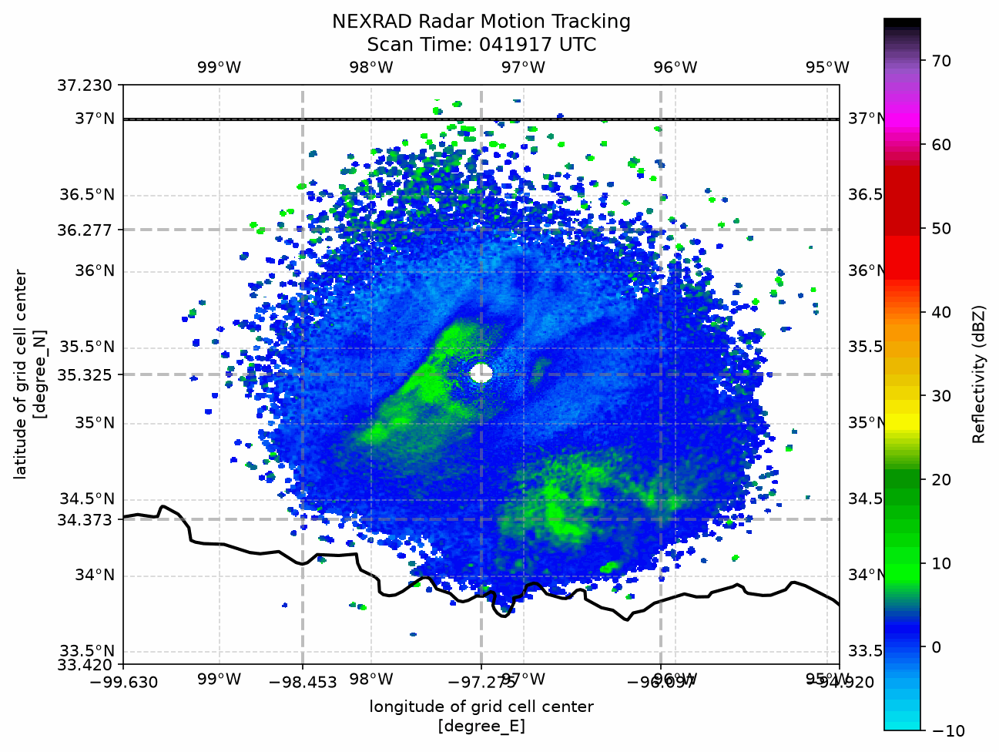
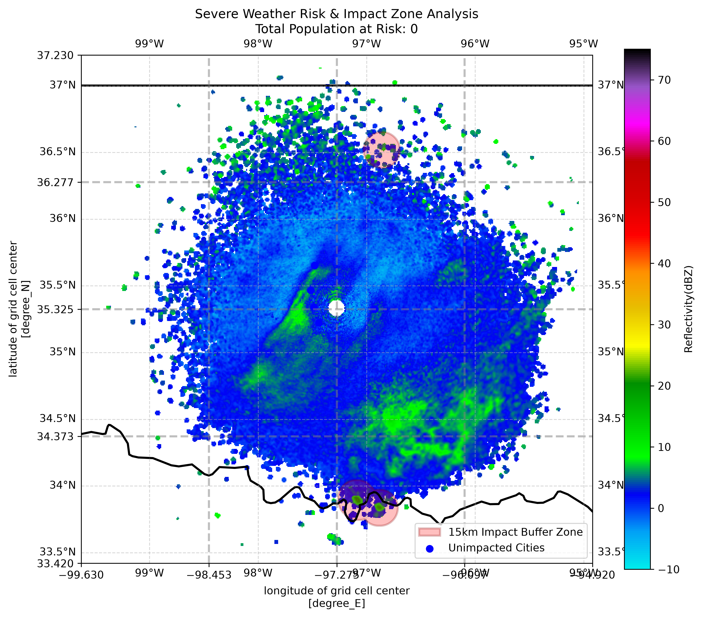

1. Dynamic Storm Tracking
Using raw Level II binary archives from NOAA's NEXRAD network via AWS S3 (Station KTLX, Oklahoma), this pipeline parses polar radial velocity and reflectivity sweeps and interpolates them onto a 3D Cartesian grid ($500 \times 500$ points spanning 200 km around the radar site).

Figure 1: Sequential radar scan tracking storm centroid movements over Norman/Oklahoma City.
2. Spatial Risk & Proximity Analysis
To move beyond simple visualization, the pipeline converts continuous grid reflectivities into vector geometries. Using projected metric coordinate reference systems (UTM Zone 14N / EPSG:32614), it constructs a 15 km spatial buffer around severe cells and performs spatial joins (sjoin) against population centers.

Figure 2: 15 km risk buffer zone evaluation highlighting impacted municipalities and exposed population totals.
3. Technical Implementation Details
- Data Retrieval: Anonymous AWS S3 bucket requests via
nexradawsfetching uncompressed radar volume files while filtering out metadata (_MDM) files. - Grid Transformation: Polar-to-Cartesian coordinate mapping using
Py-ART(ARM Radar Toolkit). - Centroid Calculation: Isolating high-reflectivity convective cores and computing spatial centers of mass using
scipy.ndimage.center_of_mass. - Geospatial Analysis: Projected metric buffer creation ($15\text{ km}$) and point-in-polygon spatial intersects using
GeoPandasandShapely.